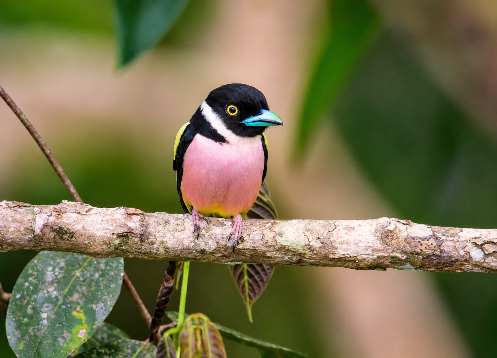

ABOUT US
Expert-Guided Birdwatching
Tours in Borneo
At Borneo Birdwatching Tours & Travel, we create guided birdwatching experiences for travelers who want to discover the rare birds, rainforest trails, and natural beauty of Borneo.
Our tours are led by local birding guides who understand the forest, the wildlife, and the best places to spot unique bird species. Whether you are a beginner or an experienced birder, we help make your journey meaningful, comfortable, and memorable.
OUR MISSION
More Than Just
A Bird Tour
Birdwatching in Borneo is not only about seeing birds. It is about understanding nature, respecting local culture, and supporting sustainable tourism.
We aim to connect visitors with Borneo's biodiversity through responsible travel, conservation awareness, and real local knowledge.
Plan Your Tour →
WHY CHOOSE US
Unique Benefits & Expert Advantages
Local Birding Experts
Discover Borneo's rare birds with experienced and passionate local guides.
Personalized Tours
We provide custom birding tours for beginners and expert birders, at your own pace and style.
Eco-Friendly Travel
Our tours support responsible tourism, wildlife protection, and local communities.
Ready to Explore Borneo?
Join us for a guided birdwatching experience filled with rare sightings, peaceful rainforest trails, and unforgettable memories.
Contact Us →